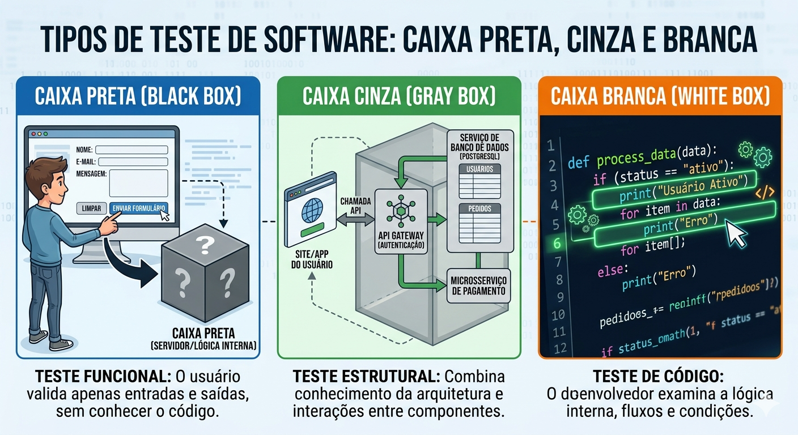
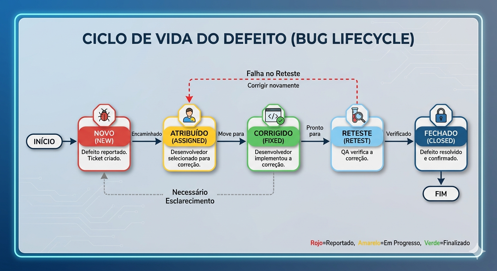
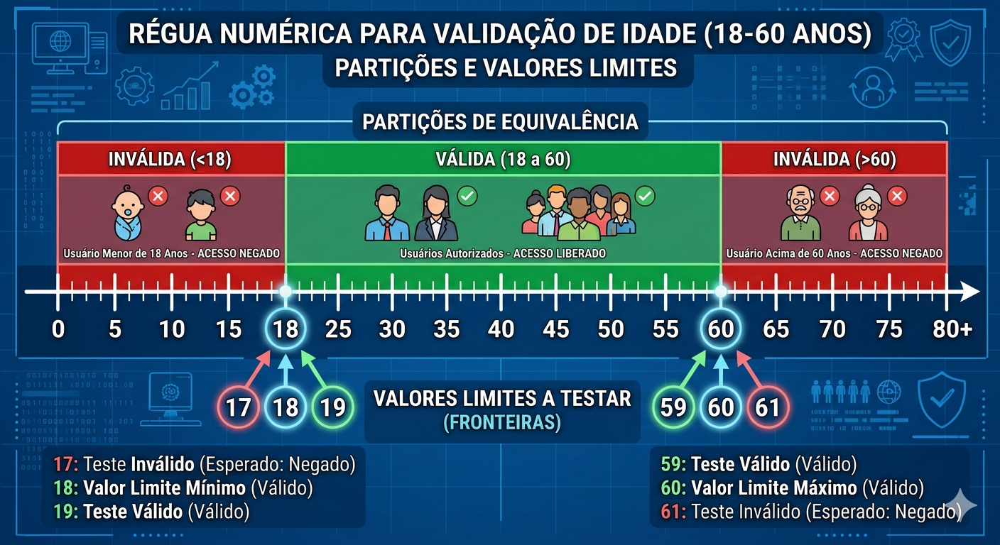

Descrição: Reconhecimento e aplicação de normas, métodos e técnicas de modelagem de testes, focando em estratégias estruturais e comportamentais.
Imagine que uma gigante do e-commerce lança a maior promoção do ano. Em questão de minutos, milhares de usuários tentam finalizar suas compras, mas um erro oculto na estrutura de cálculo de fretes derruba o sistema de pagamentos. O prejuízo? Milhões de reais perdidos em poucas horas, além da frustração massiva dos clientes.
No mercado atual, a velocidade de desenvolvimento não pode sacrificar a confiabilidade. É por isso que grandes empresas investem pesadamente na Engenharia de Qualidade, aplicando técnicas robustas para encontrar falhas arquiteturais e lógicas antes que elas atinjam o usuário final.
Quantas vezes você já abandonou o uso de um aplicativo ou site porque um botão não funcionava ou o sistema travou em uma tela de carregamento infinita? O que você acha que faltou no processo de construção desse software?
Caixa Preta, Branca e Cinza
Os métodos de teste representam diferentes filosofias de abordagem que derivam casos de teste baseados no nível de visibilidade que o testador possui da estrutura interna do software.
O Teste de Caixa Branca (também chamado de teste estrutural) exige que nós tenhamos acesso e conhecimento profundo sobre a estrutura de controle, lógica e caminhos internos do código-fonte, visando garantir que todos os caminhos independentes e decisões lógicas sejam exercitados.
Por outro lado, o Teste de Caixa Preta foca exclusivamente nos requisitos funcionais do sistema, testando o que entra e o que sai pelas interfaces do usuário, ignorando os detalhes de implementação por trás dos panos.
O Teste de Caixa Cinza surge como uma poderosa abordagem híbrida, sendo muito utilizada em testes de integração. Nesta técnica, nós validamos o sistema através das interfaces externas (visão de usuário), mas orientamos nosso planejamento de testes a partir de um conhecimento parcial da arquitetura interna e dos fluxos de dados, o que é excelente para testes baseados em riscos.
Dominar esses três perfis desenvolve uma Soft Skill fundamental: a adaptabilidade.
Precisamos saber transitar entre a mentalidade de quem constrói (desenvolvedor) e a de quem usa (cliente).
Imagine um painel triplo:

Documentação e Padronização de Testes
Para atuar como desenvolvedores e testadores em nível global, não basta encontrar os erros; é necessário documentá-los de forma padronizada.
A norma internacional ISO/IEC/IEEE 29119 define terminologias, processos e ciclos de vida de teste rigorosos, garantindo que o reporte e a correção de falhas sigam um fluxo totalmente auditável e eficiente.
Quando adotamos normas internacionais, criamos uma linguagem universal. Um erro reportado no Brasil é facilmente compreendido, reproduzido e corrigido por um time parceiro no Japão.
O uso dessa padronização fomenta uma comunicação técnica clara e livre de ambiguidades. Isso também exige pensamento crítico e empatia (o desenvolvedor não sabe o que você fez no sistema para causar o erro, você deve detalhar).
Na era moderna, nós podemos usar IA Generativa de forma ética para revisar se nossos "Bug Reports" estão em conformidade com as normas da IEEE antes de submetê-los, acelerando a etapa burocrática, desde que validemos a saída da IA com o nosso próprio rigor técnico.
Visualize um fluxograma mostrando o ciclo de vida de um defeito (Bug Lifecycle): um ticket nasce como "Novo" (New), é encaminhado para "Atribuído" (Assigned), o desenvolvedor o move para "Corrigido" (Fixed), o QA verifica em "Reteste" (Retest) e, finalmente, ele vai para "Fechado" (Closed).

Partição de Equivalência e Valor Limite
Aplicar técnicas de modelagem no design de casos de teste é a nossa principal ferramenta para garantir cobertura de software sem precisarmos testar infinitas combinações de números e palavras.
A "Partição de Equivalência" atua dividindo os domínios de dados em conjuntos de classes válidas e inválidas, assumindo a premissa de que testar apenas um representante de cada classe já é suficiente para encontrar os mesmos erros dos demais.
Complementando essa técnica, nós utilizamos a "Análise de Valor Limite (BVA)".
Historicamente, a programação está repleta de defeitos que ocorrem exatamente nos limiares das validações matemáticas (por exemplo, ao usar < em vez de <=). A BVA foca em testar os valores imediatamente acima, abaixo e sobre as fronteiras lógicas.
Combinar essas duas abordagens permite que você estruture uma Matriz de Rastreabilidade que prova tecnicamente aos gerentes de projeto que todas as funcionalidades e requisitos foram cobertos e exaustivamente testados.
Pense em uma régua numérica para um sistema que aceita usuários de 18 a 60 anos.

Dúvidas Reais do Dia a Dia
Resposta: Nem sempre na mesma proporção. Desenvolvedores costumam focar em Caixa Branca (testes unitários), enquanto os analistas de QA focam na Caixa Preta e Cinza. O ideal é o projeto ter ambas as camadas (Pirâmide de Testes).
Resposta: Você pode pedir para a IA listar todos os limites lógicos de uma regra de negócio complexa. No entanto, é você quem decide se a sugestão faz sentido para o negócio, revisando eticamente e com responsabilidade técnica.
Resposta: Ele funciona, mas quando a equipe crescer ou você precisar prestar contas ao cliente, a falta de documentação rastreável e padronizada gerará gargalos, atrasos e perda de credibilidade.
Resposta: É aqui que entra a documentação (Requisitos) e a Matriz de Rastreabilidade. O comportamento do sistema deve ser confrontado com o que foi homologado no design de requisitos e testado funcionalmente.
Resposta: Não. Testar exaustivamente não prova a ausência total de defeitos (é um dos princípios do teste), mas diminui drasticamente a probabilidade de falhas críticas de negócio.
Entrega no AVA
Todas as respostas devem estar em um documento único, em formato pdf e entregues na tarefa do AVA.
Descrição: Dada uma situação onde o testador não tem acesso ao banco de dados e apenas usa a interface web do sistema, identifique e explique qual é a estratégia visual adotada.
Entrega: Um parágrafo argumentativo identificando a técnica.
Descrição: Um sistema de fretes cobra R$ 10,00 para entregas até 5km, e R$ 25,00 para entregas acima de 5km e até 20km. Liste quais são as três partições de equivalência numéricas.
Entrega: Uma lista simples descrevendo os conjuntos de valores.
Descrição: Com base no sistema de frete do exercício anterior, estabeleça os 6 cenários de teste usando a Análise de Valor Limite para o ponto de transição de 5km e para o limite máximo de 20km.
Entrega: Uma tabela listando o limite inferior e superior para as distâncias 5km e 20km.
Descrição: Você tentou acessar uma rota de API com credenciais vazias, e o sistema travou com código 500, quando deveria retornar um erro 401 amigável. Monte um relatório simples deste erro.
Entrega: Objeto em JSON ou formato de lista contendo Título, Passos e Resultados (esperado x obtido).
Descrição: Crie uma função simples em JavaScript que aprova empréstimos apenas se o usuário ganhar mais de R$ 2000,00 E não tiver restrição no nome. Escreva 2 testes que foquem na estrutura de controle (if/else).
Entrega: Código JavaScript limpo e comentado.
Descrição: Utilize uma IA Generativa de sua preferência (ChatGPT, Gemini) e peça para gerar os Casos de Teste (BVA) de um sistema bancário que autoriza saques de até R$ 1000,00 por dia. Avalie criticamente a saída gerada.
Entrega: Um print da interação com a IA e um parágrafo validando ou corrigindo a sugestão dela.
Descrição: Crie uma mini Matriz de Rastreabilidade no Excel ou em Tabela. Conecte o Requisito "Sistema deve permitir login válido" aos Casos de Testes: CT01 (Senha correta), CT02 (Senha incorreta), CT03 (SQL Injection).
Entrega: Tabela de rastreabilidade (ID Requisito, Descrição, IDs de Casos de Teste).
Descrição: Um botão de "Adicionar ao Carrinho" não responde ao ser clicado quando há apenas 1 item no estoque. Escreva um Roteiro de Testes Passo a Passo padronizado para reportar à equipe de desenvolvimento.
Entrega: Documento estruturado seguindo os campos base da ISO 29119 adaptados (ID, Condição Inicial, Passos, Dados de entrada, Saídas).
Descrição: Descreva como você faria um teste de Caixa Cinza sabendo que o formulário de cadastro de usuário na interface web se comunica com um Banco de Dados Relacional. O que você verificaria além da tela de "Sucesso"?
Entrega: Explicação técnica detalhando a validação no front-end e a consulta SQL no back-end.
Descrição: Uma função Javascript possui este código: if (idade>18){acesso=true;}. Um QA apontou um defeito pois jovens exatamente com 18 anos estão sendo barrados. Refatore o código e construa os logs baseados na BVA para comprovar a solução.
Entrega: Código refatorado acompanhado das invocações de console.log() testando os números 17, 18 e 19.
Próximos Passos
Todo este rigor na modelagem que aprendemos hoje será a base para a nossa Avaliação Prática.
Durante o projeto, vocês serão avaliados justamente por suas habilidades em organizar o ambiente, localizar e classificar falhas na execução do teste e, o mais importante, por identificar ferramentas e estruturar o planejamento de roteiros técnicos seguindo estas metodologias (Caixa Preta/Branca) е critérios de aceitação rigorosos.
Os relatórios e matrizes que vimos hoje são os entregáveis que aprovarão seus sistemas na nossa simulação de vida real.
A Aula 08 aborda o ciclo prático da garantia de qualidade, focando na execução meticulosa dos planos de teste e no uso de ferramentas especializadas para documentar cada etapa.
O conteúdo capacita o aluno a identificar falhas sistêmicas, realizar o registro técnico de bugs e validar o software através da comparação rigorosa entre os resultados esperados e os obtidos, garantindo um processo de gestão de defeitos eficiente e rastreável.